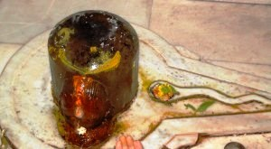

<?xml version="1.0" encoding="UTF-8"?><rss version="2.0"
	xmlns:content="http://purl.org/rss/1.0/modules/content/"
	xmlns:wfw="http://wellformedweb.org/CommentAPI/"
	xmlns:dc="http://purl.org/dc/elements/1.1/"
	xmlns:atom="http://www.w3.org/2005/Atom"
	xmlns:sy="http://purl.org/rss/1.0/modules/syndication/"
	xmlns:slash="http://purl.org/rss/1.0/modules/slash/"
	>

<channel>
	<title>Gopreksheshwar &#8211; Varanasi Temples</title>
	<atom:link href="index.html" rel="self" type="application/rss+xml" />
	<link>../../../../../index.html</link>
	<description>Temples of Varanasi as referred to in Kashi Khand</description>
	<lastBuildDate>Thu, 19 Jun 2025 05:16:46 +0000</lastBuildDate>
	<language>en-US</language>
	<sy:updatePeriod>hourly</sy:updatePeriod>
	<sy:updateFrequency>1</sy:updateFrequency>
	<generator>https://wordpress.org/?v=4.6.29</generator>
	<item>
		<title>GOPREKSHESHWAR</title>
		<link>../../../../../shiva-temples/gopreksheshwar/index.html</link>
		<pubDate>Mon, 10 May 2010 02:25:20 +0000</pubDate>
		<dc:creator><![CDATA[admin]]></dc:creator>
				<category><![CDATA[Gopreksheshwar]]></category>
		<category><![CDATA[Other Shiva Temples (E-K)]]></category>
		<category><![CDATA[Shiva Temples]]></category>
		<category><![CDATA[gop]]></category>

		<guid isPermaLink="false">../../../../../p=371.html</guid>
		<description><![CDATA[Lord Shiva was describing the various sacred Teerths (Ponds), Koop (Wells) and places of worship in Kashi.  Lord Shiva described such places with pleasure (Kashi Khand, Chapter 97). Somewhere towards the east of Aadi Mahadev is Gopreksheshwar Ling. (GOPREKSHESHWAR) Devotees who worship Gopreksheshwar will derive benefit of Godaan (giving donation of a cow to a [&#8230;]]]></description>
				<content:encoded><![CDATA[<p>Lord Shiva was describing the various sacred Teerths (Ponds), Koop (Wells) and places of worship in Kashi.  Lord Shiva described such places with pleasure (Kashi Khand, Chapter 97).</p>
<p>Somewhere towards the east of Aadi Mahadev is Gopreksheshwar Ling.</p>
<p></p>
<p style="text-align: center;"><strong>(GOPREKSHESHWAR)</strong></p>
<p>Devotees who worship Gopreksheshwar will derive benefit of Godaan (giving donation of a cow to a deserving person).</p>
<p>&nbsp;</p>
<p><strong>&#8212;&#8212;&#8212;&#8212;&#8212;&#8212;&#8212;&#8212;&#8212;&#8212;&#8212;&#8212;&#8212;&#8212;&#8212;&#8212;&#8212;&#8212;&#8212;&#8212;&#8212;&#8212;&#8212;&#8212;&#8212;&#8212;&#8212;&#8212;&#8212;&#8212;&#8212;&#8212;&#8212;&#8212;-</strong></p>
<p><strong> </strong></p>
<p><span style="text-decoration: underline;"><strong>Kashi Khand, Chapter 97, Shlok 10</strong></span></p>
<p><strong> </strong></p>
<p><strong>महादेवस्य पूर्वेण गोप्रेक्षं लिङ्गमुत्तमम्</strong></p>
<p><strong>तद्दर्शनाद् भवेत्संयग्गोदानजनितं फलम्  </strong></p>
<p>&nbsp;</p>
<p><strong>Towards the east of Mahadev Ling, Gopreksheshwar Ling is situated.  A devotee who worships this Ling gets the full benefit of performing “Godaan” i.e. Donation of Cow. </strong></p>
<p><strong> </strong></p>
<p><strong>&#8212;&#8212;&#8212;&#8212;&#8212;&#8212;&#8212;&#8212;&#8212;&#8212;&#8212;&#8212;&#8212;&#8212;&#8212;&#8212;&#8212;&#8212;&#8212;&#8212;&#8212;&#8212;&#8212;&#8212;&#8212;&#8212;&#8212;&#8212;&#8212;&#8212;&#8212;&#8212;&#8212;&#8212;&#8212;</strong></p>
<p>&nbsp;</p>
<p><strong> </strong></p>
<p><strong>Kashi Khand, Chapter 02, Shlok 81</strong></p>
<p><strong> </strong></p>
<p><strong>गवां स्तुत्वा नमस्कृत्य कृत्वा चैव प्रदक्षिणाम् </strong></p>
<p><strong>प्रदक्षिणीकृता तेन सप्तद्वीपा वसुन्धरा</strong></p>
<p>&nbsp;</p>
<p><strong>Whoever praises, salutes and circumambulates the cows, gets the reward of circumambulating Saptadvipa Vasundhara. </strong></p>
<p><strong> </strong></p>
<p><strong>&#8212;&#8212;&#8212;&#8212;&#8212;&#8212;&#8212;&#8212;&#8212;&#8212;&#8212;&#8212;&#8212;&#8212;&#8212;&#8212;&#8212;&#8212;&#8212;&#8212;&#8212;&#8212;&#8212;&#8212;&#8212;&#8212;&#8212;&#8212;&#8212;&#8212;&#8212;&#8212;&#8212;&#8212;&#8212;</strong></p>
<p><strong><span style="text-decoration: underline;">LOCATION OF GOPREKSHESHWAR</span></strong></p>
<p>Gopreksheshwar also known as Gauri Shankar is located at K-4/24, Lal Ghat Gauri Shankar, near Birla Sanskrit Vidhyalaya, Birla House.  If devotees travel in a rickshaw, they can reach Gaighat locality and walk on foot upto this place, by asking directions.  Alternatively, they can travel by boat upto Lal Ghat and climb the steps.</p>
<p>&nbsp;</p>
<p><strong>Please watch our YouTube Video about Gopreksheshwar at following Link</strong></p>
<p>&nbsp;</p>
<p><a href="https://www.youtube.com/watch?v=6zhg8dmD8V8&amp;t=4s">https://www.youtube.com/watch?v=6zhg8dmD8V8&amp;t=4s</a></p>
<p>&nbsp;</p>
<p>&nbsp;</p>
<p><strong><span style="text-decoration: underline;">TYPES OF POOJA</span></strong></p>
<p>The temple is open from 07.00 a.m. to 10.00 p.m.  Aarties are held in the morning.</p>
<p>&nbsp;</p>
]]></content:encoded>
			</item>
	</channel>
</rss>
